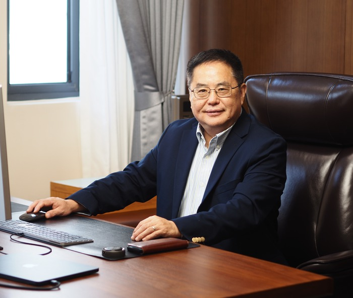

Affiliated with the State Key Laboratory of Marine Environmental Science (MEL) at Xiamen University, our group conducts research on coupled physical–ecological–biogeochemical oceanography, with a focus on the marine carbon cycle, nutrient cycles, and the response and feedback of marine ecosystems to climate change.
Centered on the CESM-CoSiNE marine ecosystem–biogeochemistry module, which we develop in-house, and combining observations with numerical simulation, the group studies the controls of planktonic ecosystems and the carbon cycle in the North Pacific, the South China Sea, and the global ocean, extending to paleoclimate reconstruction and ocean digital twins.
The group welcomes postdoctoral researchers and PhD/Master's students from around the world with interests in marine biogeochemistry, climate modeling, and computational oceanography.
